Audit digitale toegankelijkheid van website financien.noord-holland.nl en noordholland.begroting-2026.nl
Samenvatting
Wij hebben de website financien.noord-holland.nl en noordholland.begroting-2026.nl onderzocht tussen 10 en 15 september 2025. Op dit moment zijn 41 van de 55 succescriteria als voldoende beoordeeld. In dit rapport lees je wat er bij de overige 14 nog fout gaat, en hoe je dat kunt verbeteren.
Deze bevindingen hebben betrekking op alle pagina’s van het subdomein begroting-2026.nl.
#1 - Skiplink werkt niet: focus verplaatst niet naar de juiste plek
Impact: MediumType: TechniekWCAG: 2.4.1
Op alle pagina’s van de website https://noordholland.begroting-2026.nl/ is een skiplink (link om herhalende inhoud over te slaan) aanwezig, maar deze werkt niet goed. De link is wel zichtbaar en met het toetsenbord te bedienen, maar hij verplaatst de focus niet naar de bedoelde plek; de focus blijft bovenaan de pagina.
Er moet een manier zijn om delen van een pagina over te slaan, zoals het navigatiemenu en andere elementen die op meerdere pagina’s terugkomen. Je gebruikt hier een skiplink voor. Daarmee kun je vaste blokken met herhalende inhoud overslaan. Een skiplink moet de eerste link op de pagina zijn. Deze link mag verborgen zijn, maar moet zichtbaar worden zodra hij toetsenbordfocus krijgt.
Oplossing:
Zorg dat de skiplink:
de toetsenbordfocus bij activatie verplaatst naar de hoofdcontent;
standaard visueel verborgen is, maar zichtbaar wordt bij toetsenbordfocus.
#2 - Kleurcontrast van tekst is te laag (tekst kleiner dan 24px en niet vetgedrukt)
Impact: MediumType: ContentWCAG: 1.4.3
Op verschillende pagina’s van de website wordt de combinatie van blauw (#2994E1) en wit gebruikt. De kleurcontrastverhouding is 3,3:1, wat niet genoeg is voor kleine teksten. Hieronder staan enkele voorbeelden, maar dit is geen volledige lijst: de links “Begroting 2026” en “Portal” in de header, de tekst “Samenvatting” en de broodkruimels op de pagina https://noordholland.begroting-2026.nl/p13801/financiele-begroting-in-een-oogopslag en vergelijkbare teksten en broodkruimels op andere pagina’s, de huidige link “Risico’s” in de linker navigatiebalk op de pagina https://noordholland.begroting-2026.nl/p13785/risicos, de teksten “Pagina”, “Omschrijving beeld”, “Fotograaf” en andere op de pagina https://noordholland.begroting-2026.nl/p13746/bronvermelding.
Oplossing:
Deze tekst is kleiner dan 24px en niet vetgedrukt, daarom moet het contrast minimaal 4,5:1 zijn. Op deze pagina staat een instructie die uitlegt hoe je kleurcontrast kan testen: https://properaccess.nl/hoe-test-ik-kleurcontrast/.
#3 - Icoon ‘opent in nieuw venster’ heeft geen tekstalternatief
Impact: MediumType: ContentWCAG: 1.1.1
In de header bevat de link met de tekst “Portal” een pictogram dat aangeeft dat de link in een nieuw browsertabblad opent. Dit pictogram heeft echter geen alternatieve tekst, waardoor gebruikers van schermlezers niet weten dat de link in een nieuw tabblad opent.
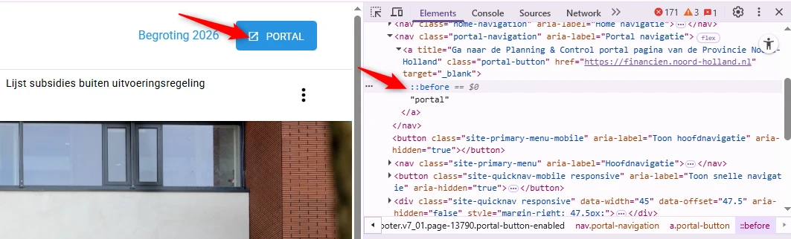
Hierdoor weet een blinde bezoeker niet dat deze link een nieuwe browsertab zal openen. Dit is belangrijke informatie die als tekst aanwezig moet zijn, zodat een schermlezer het kan voorlezen.
#### Oplossing:
Voeg de informatie dat de link een nieuwe browsertab opent toe als visueel verborgen tekst die wel toegankelijk is voor schermlezers.
### Toegankelijke naam knop is anders dan zichtbare tekst
Impact: MediumType: TechniekWCAG: 2.5.3
Na het klikken op de “drie-puntjes”-knop in de header verschijnt er een knop met de zichtbare tekst “Zoeken”. De toegankelijke naam van deze knop is “Open zoekvenster”, afkomstig van het aria-label.
Het gebruik van het aria-label-attribuut overschrijft alle andere methoden voor het benoemen van elementen. Schermlezers en spraakherkenningssoftware gebruikt de naam die in het aria-label staat. Dit wordt de “toegankelijke naam” genoemd. Als deze toegankelijke naam anders is dan de zichtbare tekst, zal de tekst die schermlezers voorlezen en die door spraakherkenningssoftware wordt gebruikt, dus afwijken van de zichtbare tekst op de knop. Hierdoor kunnen bezoekers de knop niet meer met stemcommando bedienen. Zij lezen daarvoor namelijk de tekst voor die op de knop te zien is. Omdat deze niet hetzelfde is als de toegankelijke naam, weet de spraaksoftware niet om welke knop het gaat.
Oplossing:
Zorg dat de toegankelijke naam de zichtbare tekst bevat, en zet deze tekst het liefst vooraan in de naam. De toegankelijke naam mag ook precies hetzelfde zijn als de zichtbare tekst.
#4 - Kleurcontrast van tekst is te laag (tekst kleiner dan 24px)
Impact: MediumType: TechniekWCAG: 1.4.3
Na het klikken op de “drie-puntjes”-knop in de header en vervolgens op de knop “Zoeken”, wordt een zoekbalk geopend. Wanneer er een zoekopdracht wordt uitgevoerd, verschijnen de links in de resultatenlijst als grijze tekst (#848484) op een witte achtergrond. De kleurcontrastverhouding is te laag: 3,7:1.
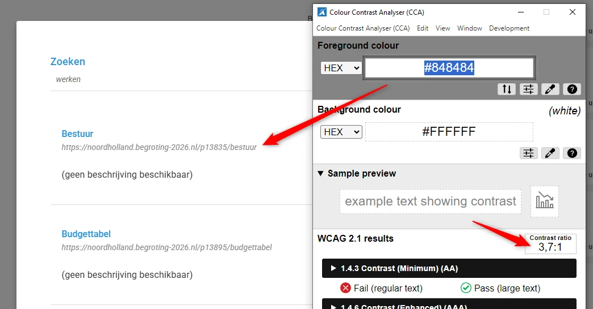
#### Oplossing:
Zorg ervoor dat de contrastverhouding hoger is dan 4,5:1.
Link naar pagina: https://noordholland.begroting-2026.nl/p13886/bevorderen-van-een-veerkrachtige-en-circulaire-economie
Problemen met contrast, tabellen en lijsten werden beschreven in andere secties.
Link naar pagina: https://noordholland.begroting-2026.nl/p13746/bronvermelding
Problemen met contrast, tabelopmaak en andere zijn beschreven in de vorige hoofdstukken.
Link naar pagina: https://noordholland.begroting-2026.nl/p13801/financiele-begroting-in-een-oogopslag
#5 - Er staan twee koppen van hetzelfde niveau direct onder elkaar
Impact: MediumType: Content/span>
WCAG: 1.3.1
Op deze pagina wordt een kop van niveau 2 onmiddellijk gevolgd door een andere kop van een hoger niveau. Zie "Toelichting op het begrotingsresultaat" (h2) en "Financiële begroting op hoofdlijnen" (h3).
Als twee koppen van hetzelfde niveau direct onder elkaar staan zonder inhoud ertussen, dan is één van de koppen niet op de goede manier gebruikt. Direct onder het eerste h3-element mag een h4-element komen of andere content, maar niet nog een keer een h3-element of een h2-element.
Oplossing:
Pas de tekst aan, zodat de kopniveaus de structuur van de tekst correct weergeven. Op deze pagina staat een instructie hoe zelf koppen op een webpagina kan testen: https://properaccess.nl/zo-controleer-je-de-koppenstructuur-van-je-website/.
#6 - Em-element is gebruikt in plaats van kop-element
Impact: KleinType: Content/span>
WCAG: 1.3.1
Op deze pagina zijn de volgende teksten onjuist gemarkeerd met em-elementen in plaats van met de juiste kop-elementen: "Het begrotingsresultaat", "Meerjarenbeeld", "Doorlichting bestemmingsreserves", "Bijdragen aan derden".
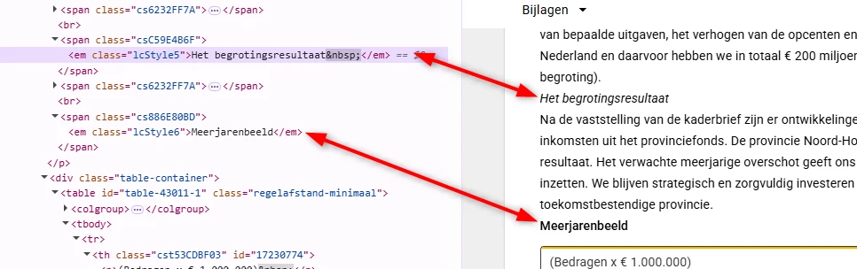
Het `em`-element is bedoeld om woorden extra nadruk te geven. Het heeft daarmee een andere semantische waarde dan een kop. Dit element moet dan ook niet gebruikt worden voor koppen.
Een vergelijkbaar probleem komt voor op de pagina https://noordholland.begroting-2026.nl/p13785/risicos bij teksten zoals “Strategische risico’s”, “1. Verkeerde Wet milieubeheerprocedure en fouten bij Wabo-procedure” en andere. Hetzelfde geldt op de pagina https://noordholland.begroting-2026.nl/p14001/onderbouwing-per-heffing bij koppen zoals “Onderbouwing per heffing”, “Belastingen: opcenten motorrijtuigenbelasting” en op andere pagina’s van de website.
#### Oplossing:
Verwijder de `em`-elementen en markeer de tussenkopjes als `h3`-koppen (of een ander geschikt kop-element).
### Gegevenstabel mist de juiste markering
Impact: MediumType: Content/span>
WCAG: 1.3.1
Op deze pagina staat een tabel. De HTML-opmaak van de tabel gebruikt de elementen th, td en tr verkeerd. Kolomkoppen zijn niet gemarkeerd als th, terwijl tussengevoegde rijen met totalen juist als th in plaats van td zijn gemarkeerd. Dit is een verkeerd gebruik van de tabel-elementen en zorgt voor verwarring, omdat schermlezers de relatie tussen cellen niet correct kunnen voorlezen. De algemene structuur en de onderlinge relaties in de tabel zijn onduidelijk.
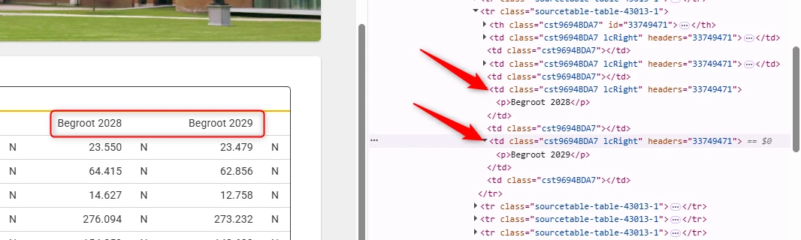
Een vergelijkbaar probleem komt voor bij de tabel op de pagina https://noordholland.begroting-2026.nl/p13785/risicos, bij tabellen die openen vanuit kaarten op de pagina https://noordholland.begroting-2026.nl/p13991/overzicht-verbonden-partijen, op de pagina https://noordholland.begroting-2026.nl/p14001/onderbouwing-per-heffing en op andere pagina’s met tabellen.
#### Oplossing:
Markeer kolom- of rijkoppen met th.
Markeer datacellen, inclusief totalen en tussentijdse resultaten, met td.
### `em`-element is gebruikt voor opmaak
Impact: KleinType: Content/span>
WCAG: 1.3.1
Op deze pagina worden in de tabel alle vetgedrukte teksten gemarkeerd met het em-element, dat gebruikt is voor opmaakdoeleinden. Zie bijvoorbeeld de teksten “Saldo van baten en lasten per programma (bedragen x € 1.000)”, “Totaal saldo van baten en lasten” en andere.
Het em-element heeft een semantische waarde: het geeft een bepaalde betekenis aan de tekst die erin staat. Dit element geeft aan dat de tekst extra nadruk moet krijgen. Om die reden mag dit element niet gebruikt worden om alleen een visueel effect te bereiken (vetgedrukte tekst).
Een vergelijkbaar probleem komt voor op de pagina https://noordholland.begroting-2026.nl/p13839/natuur-en-landelijk-gebied met de tekst “5. Natuur en landelijk gebied” in de tabel, op de pagina https://noordholland.begroting-2026.nl/p13785/risicos met vetgedrukte teksten in de tabel, op de pagina https://noordholland.begroting-2026.nl/p13991/overzicht-verbonden-partijen in tabellen die openen vanuit kaarten en op andere pagina’s.
Oplossing:
Verwijder de onnodige em-elementen en gebruik CSS om de tekst vetgedrukt te maken.
Link naar pagina: https://noordholland.begroting-2026.nl/
Problemen in de header en andere algemene knelpunten zijn al beschreven onder "Algemene knelpunten".
Link naar pagina: https://financien.noord-holland.nl/
#7 - Pagina heeft geen title-element en daardoor geen titel
Impact: MediumType: ContentWCAG: 2.4.2
Deze pagina mist het title-element waarin de titel van de pagina moet worden geplaatst. Het <meta>-element kan niet als alternatief dienen.
Dit element moet op elke pagina aanwezig zijn en unieke tekst bevatten die de inhoud van de pagina beschrijft, bij voorkeur gevolgd door de naam van de organisatie.
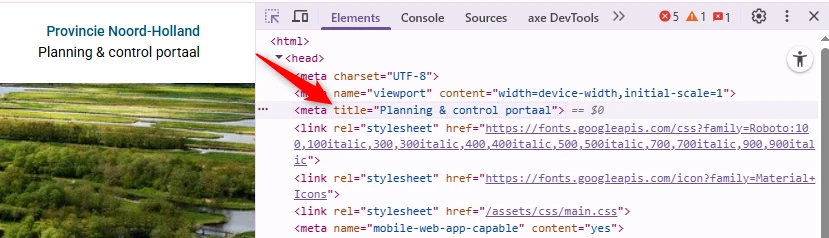
Deze tekst wordt getoond in de tab van de browser. Met een duidelijke beschrijving kunnen gebruikers makkelijker navigeren tussen verschillende pagina’s.
#### Oplossing:
Voeg het `title`-element toe aan de pagina en zet er een duidelijke, beschrijvende tekst in.
### Het `lang`-attribuut ontbreekt
Impact: MediumType: TechniekWCAG: 3.1.1
Op deze pagina ontbreekt het lang-attribuut op het html-element.
Als dit attribuut niet aanwezig is, kan voorleessoftware de pagina niet in de correcte taal voorlezen. De software weet dan niet wat de primaire taal van de pagina is.
Oplossing:
Zorg dat het lang-attribuut aanwezig is op het html-element, en dat dit attribuut de taalcode bevat van de taal van de pagina: lang=”nl” voor Nederlands.
#8 - Logo heeft geen alt-attribuut en fungeert als link waarvan de bestemming onbekend is.
Het logo bovenaan de website, geïmplementeerd met een img-element, mist een alt-attribuut. Het logo is ook een link en heeft geen beschrijvende tekst voor de bestemming. Hierdoor is het voor bezoekers die hulpsoftware gebruiken lastig om te bepalen naar welke pagina of inhoud de link leidt.
Oplossing:
Pas een van deze opties toe om de link meer context te geven:
alt-tekst: als het logo een afbeelding is, kun je een beschrijvende alt-tekst toevoegen die de bestemming van de link beschrijft (bijvoorbeeld: ‘homepage’).
aria-label: Voeg een aria-label-attribuut toe aan het a-element met een beknopte beschrijving van de bestemming.
Visueel verborgen tekst: voeg beschrijvende tekst toe binnen het a-element en verberg deze visueel met CSS, terwijl je de tekst toegankelijk houdt voor schermlezers.
#9 - In het hoofdmenu worden onjuiste rollen gebruikt
Impact: MediumType: TechniekWCAG: 4.1.2
In het hoofdmenu worden de niet-bestaande rollen gebruikt: aria-role="tab" in plaats van role="tab", aria-role="tablist" in plaats van role="tablist” en aria-role="presentation" in plaats van role="presentation".
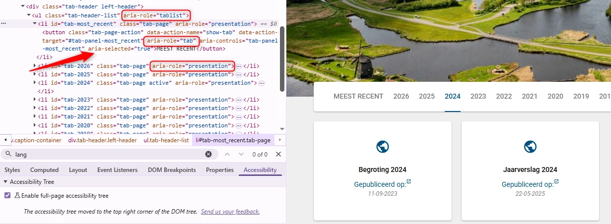
Door verkeerde rollen te gebruiken werkt het menu niet zoals bedoeld. Navigatie functioneert niet goed en attributen die afhankelijk zijn van de juiste semantiek, zoals aria-selected="true", worden genegeerd door hulpsoftware. Daardoor wordt de geselecteerde tab niet aangekondigd door schermlezers zoals verwacht.
#### Oplossing:
Vervang alle “aria-role" door het juiste rol-attribuut (`role="tab"`, `role="tablist"`, `role="presentation"`). Zo blijft de tab-structuur volgens de WAI-ARIA regels en werkt deze goed met hulpmiddelen zoals schermlezers. Wil je weten hoe je toegankelijke tabbladen maakt? Kijk dan op: https://www.w3.org/WAI/ARIA/apg/patterns/tabs/.
### Links hebben geen toegankelijke namen
Impact: MediumType: TechniekWCAG: 4.1.2
Wanneer iemand een optie kiest in het hoofdmenu, verschijnt er één of meer kaarten eronder. Zo’n kaart werkt als een link, maar heeft geen toegankelijke naam. De link zit alleen om het icoontje met een wereldbol, maar dit icoontje is niet zichtbaar voor hulpsoftware.
Daardoor begrijpen gebruikers van schermlezers niet waar de link voor is of waar die naartoe gaat.
Elke link moet een duidelijke toegankelijke naam hebben die goed uitlegt wat de link doet. Dit is ook in strijd met SC 2.4.4 (Doel van een link moet duidelijk zijn) en SC 2.5.3 (Zichtbare linktekst moet in de toegankelijke naam staan).
Oplossing:
Geef de link een toegankelijke naam. Dit kan door een duidelijke linktekst te gebruiken of een aria-label toe te voegen. De beste oplossing is het opnemen van de inhoud van de kaart in de link.
#10 - Icoon ‘opent in nieuw venster’ heeft geen tekstalternatief
Impact: MediumType: TechniekWCAG: 1.1.1
Wanneer iemand een optie kiest in het hoofdmenu, verschijnen er één of meer kaarten eronder. In zo’n kaart staat naast de tekst “Gepubliceerd op:” een icoon dat laat zien dat de link in een nieuw browsertabblad opent. Dit icoon heeft echter geen alternatieve tekst. Daardoor weten gebruikers van schermlezers niet dat de link in een nieuw tabblad opent.
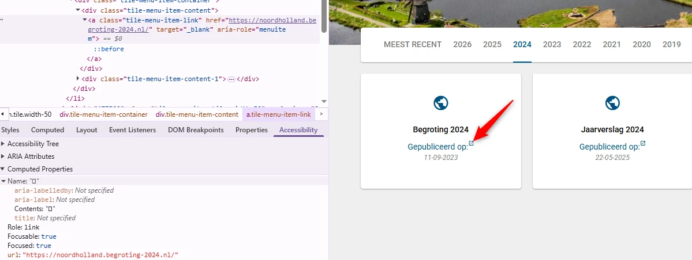
Hierdoor weet een blinde bezoeker niet dat deze link een nieuwe browsertab zal openen. Dit is belangrijke informatie die als tekst aanwezig moet zijn, zodat een schermlezer het kan voorlezen.
Hetzelfde probleem doet zich voor met een soortgelijk pictogram wanneer de pagina wordt bekeken op een klein scherm.
#### Oplossing:
Voeg deze informatie toe als visueel verborgen tekst die wel toegankelijk is voor schermlezers.
### Interactieve elementen worden verborgen voor de schermlezer
Impact: MediumType: TechniekWCAG: 1.3.1
Wanneer in het menu de optie “Zoeken” wordt gekozen, verschijnt een zijbalk met filters. Onder de kop “Filters” hebben interactieve onderdelen (radioknoppen) in de CSS de eigenschap display:none. Dit verbergt de inhoud ook voor schermlezers en mag niet gebruikt worden voor informatieve of interactieve elementen. Daardoor wordt de inhoud ontoegankelijk voor mensen die hulpmiddelen gebruiken.
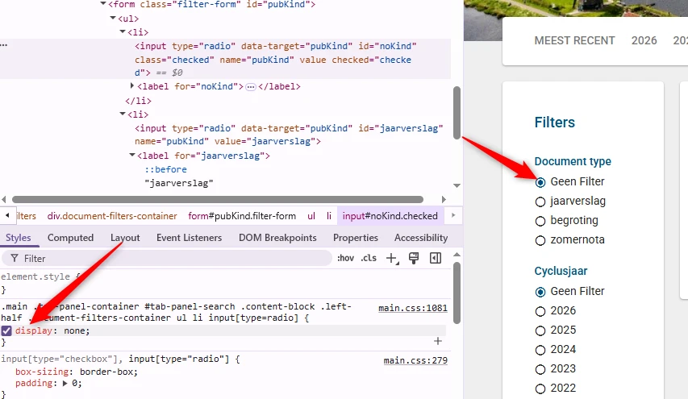
Momenteel werken deze selectievakjes niet met de computermuis en niet met het toetsenbord. Als dit alleen tijdelijk is tijdens de ontwikkeling van de website, moet deze code later verwijderd worden en moet de toegankelijkheid van deze filters opnieuw goed gecontroleerd worden.
#### Oplossing:
Verwijder deze CSS-code `display:none` voor filters radiobuttons.
### A `fieldset`-element is present without a `legend`
Impact: MediumType: TechniekWCAG: 4.1.2, 1.3.1
Wanneer in het menu de optie “Zoeken” wordt gekozen, verschijnt een zijbalk met filters. Direct onder de kop “Filters” wordt een fieldset-element gebruikt, maar het legend-element ontbreekt. Een fieldset zorgt voor de groepering van elementen en moet altijd een toegankelijke naam hebben die met het legend-element kan worden toegevoegd. In dit geval is het gebruik van fieldset eigenlijk ook niet nodig.
Onder de kop “Filters” staan twee groepen radioknoppen, elk met een eigen titel: “Documenttype” en “Cyclusjaar”. Deze groepen hebben wél een fieldset en legend nodig, zodat duidelijk is dat de kop hoort bij de radioknoppen.
Oplossing:
Verwijder het onnodige fieldset-element dat direct onder de kop “Filters” staat. Plaats in plaats daarvan elke groep radioknoppen in een eigen fieldset en voeg een legend-element toe. Gebruik de bestaande subtitels (of een meer beschrijvende tekst) als de legend, zodat duidelijk is wat het doel van elke groep is.
#11 - Zoekveld: zichtbare tekst niet in de naam
Impact: MediumType: TechniekWCAG: 2.5.3
Wanneer in het hoofdmenu de optie “Zoeken” wordt gekozen, verschijnt er een zoekveld eronder. De zichtbare tekst van de zoekbalk is “Zoeken”, maar de toegankelijke naam van het input-element is “Zoekterm”.
Voor spraakbediening moet de zichtbare tekst onderdeel zijn van de toegankelijke naam. Anders werken spraakopdrachten die de zichtbare tekst gebruiken niet. Zorg er dus voor dat de toegankelijke naam de zichtbare tekst bevat, bij voorkeur aan het begin.
Oplossing:
Zorg dat de toegankelijke naam de zichtbare tekst bevat, en zet deze tekst het liefst vooraan in de naam. De toegankelijke naam mag ook precies hetzelfde zijn als de zichtbare tekst.
#12 - Kop is niet gemarkeerd als koptekst
Impact: MediumType: TechniekWCAG: 1.3.1
Wanneer in het hoofdmenu de optie “Zoeken” wordt gekozen, verschijnt er een zoekveld eronder. Onder dit veld staat de tekst “Resultaten”. Als er resultaten zijn, komt er meer inhoud onder “Resultaten”. Deze tekst is nu niet opgemaakt als kop.
Bezoekers die hulpsoftware gebruiken hebben niets aan een (tussen)kop die er wel uitziet als kop, maar niet als kop is gemarkeerd. Via de koppen op een pagina kunnen gebruikers van hulpsoftware de inhoud scannen of snel naar een bepaalde sectie springen. Maar dat kan alleen als de kop ook echt in de code staat. Als koppen alleen visueel als kop zijn vormgegeven (bijvoorbeeld vetgedrukt), ontstaat bovendien nog een ander probleem: de structuur van de informatie in de code wijkt dan af van de visuele structuur. Op deze pagina staat een instructie hoe je zelf koppen op een webpagina kan testen: https://properaccess.nl/zo-controleer-je-de-koppenstructuur-van-je-website/.
Oplossing:
Dit voorkom je door koppen altijd te markeren met het juiste HTML-element, op het juiste kopniveau: h1, h2, h3, h4, h5 of h6. Meestal kun je het kopniveau kiezen via de content-editor in je CMS. De HTML-code voor de kop wordt dan automatisch toegepast.
#13 - Melding over aangepaste zoekresultaten wordt niet automatisch voorgelezen door schermlezers
Impact: MediumType: TechniekWCAG: 4.1.3
Wanneer in het hoofdmenu de optie “Zoeken” wordt gekozen, verschijnt er een zoekveld. Als er een zoekopdracht wordt uitgevoerd, verschijnt onder “Resultaten” de melding “Fout tijdens het zoeken”, zonder dat de pagina opnieuw wordt geladen. Deze melding is een statusbericht, maar wordt niet voorgelezen door schermlezers.
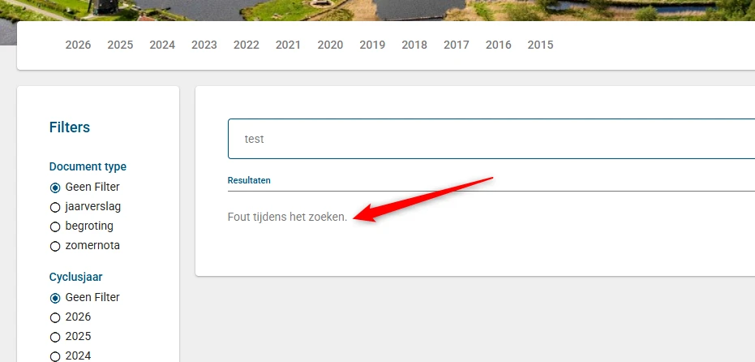
Dat is wel de bedoeling. Deze melding is namelijk een statusbericht.
#### Oplossing:
Statusberichten moeten automatisch voorgelezen worden door schermlezers, maar de code die dit mogelijk maakt is nog niet toegevoegd. Je lost dit op door aria-live-attribute aan de melding toe te voegen.
### Knop heeft een onduidelijke naam
Impact: MediumType: ContentWCAG: 2.4.6
Wanneer de pagina op een klein scherm wordt bekeken, verschijnt een knop met een dropdown om een jaar te kiezen. Het zichtbare label van dit element toont alleen het gekozen jaar (bijvoorbeeld “2024”). Dit label legt niet uit wat het doel van de knop is. Daardoor begrijpen bezoekers niet dat dit een filter is om een jaar te selecteren.
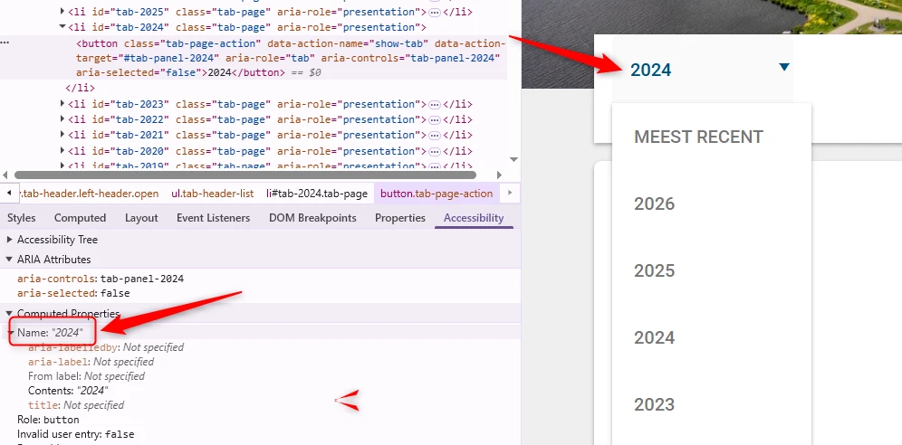
Gebruikers van schermlezers horen alleen het getal zonder verdere uitleg, waardoor het doel van deze knop onduidelijk is.
#### Oplossing:
Zorg dat het element een duidelijk label heeft dat het doel uitlegt. Bijvoorbeeld:
Zichtbare tekst: “Jaar: 2024” of “Filter op jaar: 2024”.
Toegankelijke naam: gebruik een aria-label of aria-labelledby, zoals “Selecteer jaar, huidige waarde 2024”.
#14 - Dropdownpijltje heeft geen tekstalternatief
Impact: MediumType: TechniekWCAG: 1.1.1
Wanneer de pagina op een klein scherm wordt bekeken, verandert het hoofdmenu in één knop met een pijlje om een submenu aan te geven. Dit pictogram heeft echter geen alternatieve tekst. Omdat de pijl informatie geeft (“submenu aanwezig”), moet deze informatie toegankelijk zijn voor alle bezoekers, ook voor mensen die de afbeeldingen niet kunnen zien.
Oplossing:
Dit kan worden opgelost door:
alt-tekst toe te voegen: Geef een beschrijvende alt-tekst aan het pijlpictogram (bijvoorbeeld alt="Submenu").
aria-expanded te gebruiken: Als de pijl verandert om aan te geven of het submenu open of dicht is, gebruik dan het attribuut aria-expanded op de link om deze status ook programmatisch duidelijk te maken.
#15 - De staat van submenu wordt niet doorgegeven aan schermlezer
Impact: MediumType: TechniekWCAG: 4.1.2
Wanneer de pagina op een klein scherm wordt bekeken, krijgt het hoofdmenu “MEEST RECENT” een submenu. Een blinde bezoeker krijgt geen informatie of het submenu open of dicht is.
Oplossing:
Zet aria-expanded="true" wanneer het submenu open is en aria-expanded="false" wanneer het gesloten is.
Link naar pagina: https://noordholland.begroting-2026.nl/p13768/meerjarenraming-2026-2029
Problemen met contrast werden al in andere hoofdstukken beschreven.
Link naar pagina: https://noordholland.begroting-2026.nl/p13839/natuur-en-landelijk-gebied
#16 - Kontrastratio is minder dan 4,5:1
Impact: MediumType: Content/span>
WCAG: 1.4.3
Op deze pagina staat de grijze tekst “Bedragen x € 1.000” (#999999) op een witte achtergrond. De kleurcontrastverhouding is te laag: 2,8:1.
Oplossing:
Deze tekst is kleiner dan 24px en niet vetgedrukt, daarom moet het contrast minimaal 4,5:1 zijn. Op deze pagina staat een instructie die uitlegt hoe je kleurcontrast kan testen: https://properaccess.nl/hoe-test-ik-kleurcontrast/.
Link naar pagina: https://noordholland.begroting-2026.nl/p13991/overzicht-verbonden-partijen
#17 - Kopniveau’s kloppen niet
Impact: MediumType: Content/span>
WCAG: 1.1.1
Op deze pagina wordt een kopje van niveau 2 "Deelneming" onmiddellijk gevolgd door een ander kopje van hetzelfde niveau "Alliander N.V.".
Als twee koppen van hetzelfde niveau direct onder elkaar staan zonder inhoud ertussen, dan is één van de koppen niet op de goede manier gebruikt. Direct onder het eerste h2-element mag een h3-element komen of andere content, maar niet nog een keer een h2-element.
Hetzelfde probleem komt voor bij vergelijkbare koppen op de pagina: “Gemeenschappelijke regelingen” en “Recreatieschap Spaarnwoude”, “Privaatrechtelijke rechtspersonen” en “Interprovinciaal overleg (vereniging IPO)”, “Publiekrechtelijk rechtspersoon” en “Fonds nazorg gesloten stortplaatsen provincie Noord-Holland”.
Oplossing:
Pas de tekst aan, zodat de kopniveaus de structuur van de tekst correct weergeven.
Link naar pagina: https://noordholland.begroting-2026.nl/p13813/wettelijk-en-provinciaal-beleidskader
Link naar PDF:
https://www.noord-holland.nl/bestanden/pdf/Beleidskader%20erfgoed%20en%20cultuur%202022.pdf.
#18 - PDF-document heeft geen titel
Impact: MediumType: ContentWCAG: 2.4.2
Dit pdf-document heeft geen titel ingesteld in de bestandseigenschappen.
Los het op in Adobe Acrobat:
Open het pdf-document in Adobe Acrobat.
Ga naar Bestand > Eigenschappen.
Ga naar het tabblad Beschrijving.
Vul in het veld Titel een beschrijvende titel in, bijvoorbeeld:
"Rapport: Bevolkingscijfers 2023".
Klik op OK en sla het bestand op.
#19 - De taal is niet ingesteld in de metadata
Impact: MediumType: ContentWCAG: 3.1.1
In de metadata van deze pdf is de taal niet ingesteld.
Los het op in Adobe Acrobat:
Open het pdf-document in Adobe Acrobat.
Ga naar Bestand > Eigenschappen.
Ga naar het tabblad Geavanceerd.
Selecteer in het veld Taal de juiste taal voor het document, bijvoorbeeld Nederlands (Dutch).
Klik op OK en sla het bestand op.
#20 - Een deel van het document is niet voorzien van codes
Impact: MediumType: ContentWCAG: 1.3.1
In dit pdf-document is de eerste pagina helemaal niet getagd.
Dit deel van het document kunnen wij hierdoor niet onderzoeken. Het gaat om alle succescriteria die met de pdf-codelaag te maken hebben, zoals semantische koppen en alternatieve teksten bij afbeeldingen. Als je dit oplost, is het dus mogelijk dat er nieuwe toegankelijkheidsproblemen ontstaan die nu nog niet aan het licht zijn gekomen.
Oplossing:
Voorzie dit gedeelte van codes die de structuur van het document weergeven.
#21 - Koppen zijn niet als kop gemarkeerd
Impact: MediumType: ContentWCAG: 1.3.1
In dit pdf-document staan koppen die niet als kop gemarkeerd zijn. Zie bijvoorbeeld "Leeswijzer" op pagina 4, "Impact covid-19" op pagina 5, "Drie opgaven" op pagina 6 en andere.
Op deze manier verschilt de visuele informatiestructuur van de structuur van het document in de tags.
Oplossing:
Vervang de P-tag door de H-tag, zodat de tag-structuur gelijk is aan de visuele structuur.
#22 - Decoratieve afbeeldingen hebben automatisch gegenereerde alt- tekst
Impact: MediumType: ContentWCAG: 1.1.1
In dit PDF-document worden decoratieve afbeeldingen ten onrechte getagd als figuren met overbodige tekstalternatieven. Zie pagina's 8, 10, 12 en andere.
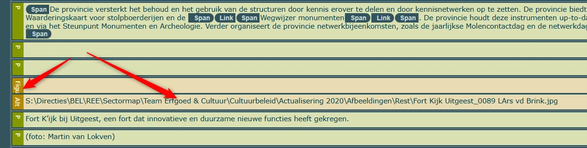
Deze beschrijvingen voegen niets toe aan de pagina, want de afbeeldingen zijn decoratief. Daarom mag je hier niet de `Figure`-tag voor gebruiken.
#### Oplossing:
Verander de afbeeldingen in een artefact.
### Informatieve afbeeldingen hebben geen alt-tekst
Impact: MediumType: ContentWCAG: 1.1.1
In dit pdf-document staat op pagina 7 een informatieve afbeelding zonder tekstalternatief (alt-tekst).
Afbeeldingen die met de Figure-tag zijn geplaatst, moeten altijd een beschrijving (alt-tekst) hebben. De Figure-tag is alleen bedoeld voor informatieve afbeeldingen. Schermlezers lezen de alt-tekst voor, zodat blinde bezoekers ook alle informatie tot zich kunnen nemen. Omdat de alternatieve tekst nu ontbreekt, lezen schermlezers alleen “afbeelding” voor. Blinde bezoekers kunnen hierdoor het gevoel krijgen dat ze inhoud missen.
Oplossing:
Voeg tekst alternatief toe aan deze informatieve afbeeldingen.
#23 - Leesvolgorde van de tags is niet logisch
Impact: MediumType: ContentWCAG: 1.3.2
In dit pdf-document is de leesvolgorde op sommige plaatsen niet logisch. Op pagina 9, in het kader, gaan "Intrumenten" en "Koppeling programma's en projecten" voor "Resultaat 2025" en in tags - erna. Hetzelfde geldt voor pagina's 16, 24, 26 en andere.
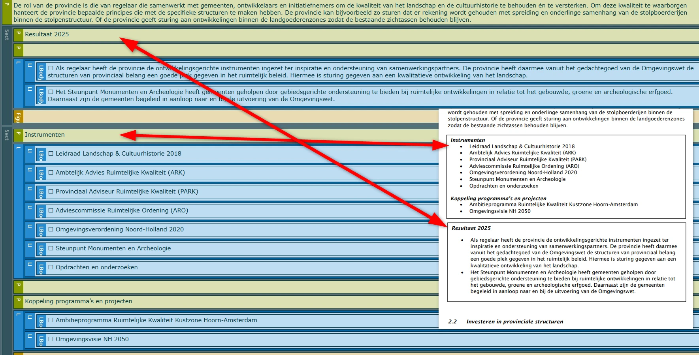
Schermlezers lezen een pdf-document in de volgorde van de tags die in de codelaag staan. Als die niet logisch is, is de leesvolgorde dat dus ook niet en wordt het voor een blinde bezoeker moeilijk om de inhoud van het document te begrijpen.
#### Oplossing:
Zorg dat de volgorde van de tags logisch is.
### De structuur van een lijst klopt niet
Impact: MediumType: ContentWCAG: 1.3.1
In dit pdf-document staat op pagina 19 onder het kopje "Instrumenten" een lijst met 11 items. In de tags staan echter twee aparte lijsten.
Oplossing:
Combineer de lijsten: voeg de afzonderlijke L-tags samen tot één enkele lijst, zodat schermlezers de items als een doorlopende lijst voorlezen. Je kunt de twee lijsten ook ongewijzigd laten en bij de tweede lijst een toelichting plaatsen waarin staat dat deze lijst een vervolg is op de lijst van de vorige pagina.
#24 - Tabelkoppen zijn niet gemarkeerd
Impact: MediumType: ContentWCAG: 1.3.1
In dit pdf-document op pagina 20 is de tabel onder het kopje "2.4 Financieel kader" een gegevenstabel. De juiste opmaak ontbreekt.
Bij een datatabel moet je speciale tags toevoegen voor de tabelkoppen. Dan begrijpen schermlezers de relatie tussen de kop en onderliggende datacellen.
Hetzelfde geldt voor de tabellen op pagina 26, 34, 38 en 39.
Oplossing:
Markeer de cellen in de koprij van de tabel met TH-tags en de datacellen met TD-tags.
Link naar pagina: https://noordholland.begroting-2026.nl/p13813/wettelijk-en-provinciaal-beleidskader
Link naar PDF: https://www.noord-holland.nl/bestanden/pdf/Ontwikkelingsperspectief%20circulaire%20economie.pdf.
#25 - PDF-document heeft geen titel
Impact: MediumType: ContentWCAG: 2.4.2
Dit pdf-document heeft geen titel in de bestandseigenschappen.
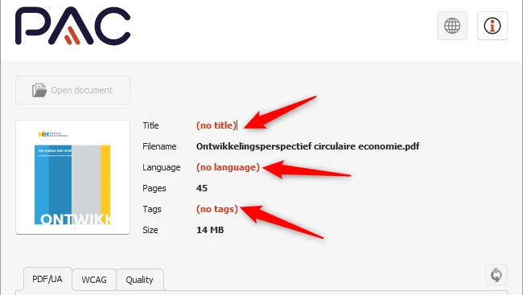
Zelfs als er een titel op de eerste pagina staat, moet je in de PDF-instellingen ook een documenttitel instellen. Als je een pdf opent in een pdf-lezer (zoals Adobe Acrobat of een browser), zie je de bestandsnaam meestal bovenaan in de titelbalk, bijvoorbeeld *document123.pdf*. Maar als je een documenttitel in de pdf-metadata instelt, dan wordt die titel in plaats van de bestandsnaam getoond. Dit maakt het document toegankelijker voor bezoekers met verschillende beperkingen. Zij kunnen dan snel en gemakkelijk zien of het document relevant is.
#### Los het op in Adobe Acrobat:
Open het pdf-document in Adobe Acrobat.
Ga naar Bestand > Eigenschappen.
Ga naar het tabblad Beschrijving.
Vul in het veld Titel een beschrijvende titel in, bijvoorbeeld:
"Rapport: Bevolkingscijfers 2023".
Klik op OK en sla het bestand op.
#26 - De taal is niet ingesteld in de metadata
Impact: MediumType: ContentWCAG: 3.1.1
In de metadata van deze pdf is de taal niet ingesteld.
Het is belangrijk om de taal in te stellen. Dan kan hulpsoftware de informatie uit het bestand met de juiste uitspraakregels voorlezen.
Los het op in Adobe Acrobat:
Open het pdf-document in Adobe Acrobat.
Ga naar Bestand > Eigenschappen.
Ga naar het tabblad Geavanceerd.
Selecteer in het veld Taal de juiste taal voor het document, bijvoorbeeld Nederlands (Dutch).
Klik op OK en sla het bestand op.
#27 - Structuur van pdf-document is niet in codes vastgelegd
Impact: MediumType: ContentWCAG: 1.3.1
In dit pdf-document ontbreken codes, waardoor de inhoud niet toegankelijk is voor schermlezers.
Bovendien kunnen wij de pdf hierdoor niet volledig onderzoeken. Het gaat om alle succescriteria die met de pdf-codelaag te maken hebben, zoals semantische koppen en alternatieve teksten bij afbeeldingen. Als je dit oplost, is het dus mogelijk dat er nieuwe toegankelijkheidsproblemen ontstaan die nu nog niet aan het licht zijn gekomen.
Oplossing:
Voeg codes toe aan het document die de structuur van het document weergeven.
#28 - Knop heeft niet voldoende contrast
Impact: MediumType: ContentWCAG: 1.4.11
Onderaan alle pagina’s van dit pdf-document staan blauwe (#85C1EB) interactieve knoppen – “huis” en “pijlen”. Deze knoppen worden gebruikt voor de navigatie door het document. Hun contrast met de witte achtergrond is slechts 1,9:1.
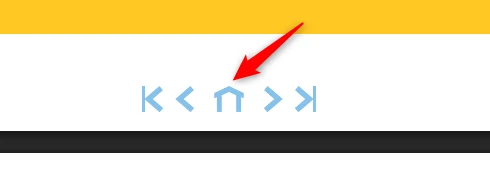
#### Oplossing:
Zorg dat het contrast voor interactieve elementen minimaal 3,0:1 is.
### Kleurcontrast van kleine tekst is te laag
Impact: MediumType: ContentWCAG: 1.4.3
In het pdf-document wordt op verschillende pagina’s een combinatie van blauw (#32A4DF) en een witte achtergrond gebruikt. Voorbeelden hiervan zijn de blauwe tekst in de inhoudsopgave op pagina 2, de kop “INLEIDING” op pagina 5, de kop “WAAROM EEN CIRCULAIRE ECONOMIE?” op pagina 7 en andere pagina’s van het document. De kleurcontrastverhouding is te laag: 2,8:1.
Op pagina 2 staat de gele tekst “INHOUD” (#FEC823) op een blauwe achtergrond (#32A4DF) met een contrastverhouding van 1,8:1. Dezezelfde kleurencombinatie komt ook voor op pagina 3 bij de tekst “We staan op een kantelpunt”.
Op pagina 3 staat de witte tekst “We staan op een kantelpunt” op een gele achtergrond (#FEC823). De contrastverhouding is daar 1,6:1.
Op pagina 4 bevat het cirkeldiagram groene teksten (#B8CB9C), zoals “Grondstoffen delven” of “Ontwerpen”, die een laag contrast hebben met de witte achtergrond.
Op dezelfde pagina staat het jaartal “2025” in grijs (#C6D8E1) op een witte achtergrond met een contrastverhouding van 1,5:1.
Op veel pagina’s van het pdf-document staan citaten (blockquotes), bijvoorbeeld op pagina’s 8, 11, 13 en andere. Deze citaten bevatten witte tekst op een blauwe achtergrond (#72B9E8 of #85C1EB). De kleurcontrastverhouding is respectievelijk 2,1:1 en 1,9:1.
Oplossing:
De vereiste minima zijn de volgende: voor kleine teksten met een lettergrootte tot 24 px en niet vet, moet het minstens 4,5:1 zijn, en voor grote teksten vanaf 24 px of vet minstens 3,0:1.
#29 - Alleen kleur is gebruikt om informatie te geven in legenda bij grafiek
Impact: MediumType: ContentWCAG: 1.4.1
In dit pdf-document staat op pagina 3 een kaart. Kleur wordt gebruikt om informatie te geven. Bekijk de legenda en de landen op de kaart.
Alleen mensen die de kleuren kunnen zien en van elkaar kunnen onderscheiden zien welk land bij welke categorie in de legenda hoort. Dit kan opgelost worden door naast kleur bijvoorbeeld ook verschillende soorten arcering te gebruiken.
Oplossing:
Gebruik naast kleur bijvoorbeeld ook verschillende soorten arcering.
#30 - Niet genoeg contrast van informatieve elementen
Impact: MediumType: ContentWCAG: 1.4.11
In dit pdf-document staat op pagina 3 een kaart. De kleuren van landen op de kaart hebben niet genoeg contrast met de witte achtergrond en met de aangrenzende kleuren. Zo heeft Brazilië een oranje tint met een contrastverhouding van 2,7:1 ten opzichte van de witte achtergrond. Het contrast tussen de VS (#D44235) en Mexico (#E58E86) is 1,8:1.
Oplossing:
Het contrast van informatieve elementen ten opzichte van aangrenzende gebieden moet ten minste 3,0:1 zijn om ervoor te zorgen dat gebruikers ze kunnen onderscheiden. Controleer alle kleuren op deze kaart.
Deze bevinding wordt niet afgekeurd omdat de grafiek als een ontoegankelijk alternatief dient voor alle informatie die in de tabel of als tekst op de pagina staat. We schrijven deze bevinding op om je bewust te maken van een potentieel probleem. Voeg altijd een tekstueel alternatief voor alle informatie die je in een vergelijkbare grafiek toont.
Op deze pagina staat onder de kop “Ontwikkeling van aantal voertuigen per brandstofsoort” een grafiek. Alle kleuren behalve paars hebben onvoldoende contrast met de witte achtergrond. Zo heeft de gele balk (#FFC000) een contrastverhouding van 1,6:1, en de grijze balk (#A5A5A5) een contrastverhouding van 2,5:1. Hetzelfde probleem geldt voor de andere twee balken.
Oplossing:
Zorg dat het contrast tussen informatieve elementen van een grafiek minimaal 3,0:1 is, zodat bezoekers ze van elkaar kunnen onderscheiden. Controleer of alle kleuren in de grafiek voldoende contrast hebben.
Link naar pagina: https://noordholland.begroting-2026.nl/p14102/staat-van-investeringen-en-financiering
Problemen met contrast, tabelopmaak en andere zijn beschreven in de vorige hoofdstukken.
Link naar pagina: https://noordholland.begroting-2026.nl/p13744/waar-zijn-wij-te-bereiken
Problemen met contrast werden al in andere hoofdstukken beschreven.
Link naar pagina: https://noordholland.begroting-2026.nl/p13785/risicos
#32 - Kontrastratio is minder dan 4,5:1
Impact: KleinType: Content/span>
WCAG: 1.4.3
Op deze pagina staat in de tabel een rode (#F00000) cel met daarin het zwarte (#300000) getal "8". De kleurcontrastverhouding is 4,2:1, wat niet voldoende is.
Oplossing:
Zorg ervoor dat het kleurcontrast niet minder is dan 4,5:1.
Link naar pagina: https://noordholland.begroting-2026.nl/p13813/wettelijk-en-provinciaal-beleidskader
Problemen met contrast werden in andere hoofdstukken beschreven.
#33 - Opsomming is niet opgebouwd met het HTML-element ul of ol
Impact: KleinType: ContentWCAG: 1.3.1
Op deze pagina, onder het kopje "Provinciaal beleidskader", is een lijst met 13 items aanwezig, maar de juiste opmaak ontbreekt.
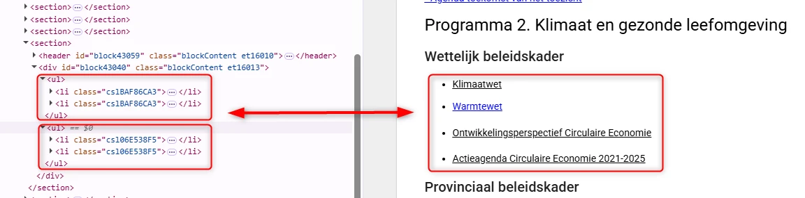
Tekst die eruitziet als een opsomming, moet ook zo in de code worden gemarkeerd. Je gebruikt voor lijsten en opsommingen de HTML-elementen `ol` (lijst met cijfers) of `ul` (lijst met bullets). Meestal is hier een knop voor in de content-editor van een CMS. Hulpsoftware weet dan hoe de tekst is gestructureerd. Bovendien kondigen schermlezers dan het aantal items in de lijst aan, voordat ze die gaan voorlezen. Zo weet een blinde bezoeker hoeveel informatie er nog komt. Meer over lijsten en waarom ze belangrijk zijn lees je op deze pagina https://properaccess.nl/waarom-correcte-html-lijsten-het-verschil-maken-in-toegankelijkheid/.
Op deze pagina staat onder de kop “Wettelijk beleidskader” een lijst met 4 items. In de code is deze lijst echter opgemaakt als twee losse lijsten met telkens twee items.
Inhoud die eruitziet als een lijst moet ook in de code als één lijst worden gemarkeerd. Zo krijgen blinde bezoekers dezelfde informatiestructuur als ziende bezoekers. Een extra voordeel van het correct opmaken van een lijst is dat schermlezers eerst het aantal items aankondigen voordat ze de inhoud voorlezen.
Een vergelijkbaar probleem komt voor op de pagina https://noordholland.begroting-2026.nl/p13886/bevorderen-van-een-veerkrachtige-en-circulaire-economie bij de lijst onder de tekst “De provincie werkt aan vier speerpunten”.
#### Oplossing:
Zorg dat alle opsommingen op de juiste manier in de code zijn gemarkeerd.
Over dit onderzoek
Leeswijzer
Onze rapporten zijn anders. Bij het bespreken van de gevonden problemen volgen wij niet de structuur van de norm, maar die van jouw website of app. Hierdoor kun je gewoon per pagina of scherm aan de slag gaan. Wel zo makkelijk! Je vindt verderop een overzicht van alle pagina’s met problemen.
We geven je bij elk gevonden issue een paar voorbeelden, maar niet een complete lijst. Controleer zelf of het probleem ook nog op andere plekken voorkomt. Zie het rapport als een leidraad.
Gebruikte norm
Dit onderzoek laat zien in hoeverre de website op dit moment voldoet aan WCAG 2.2, niveau A en AA. WCAG staat voor Web Content Accessibility Guidelines. Dit is de internationale norm voor digitale toegankelijkheid. De Europese norm EN 301 549 bevat alle eisen van WCAG op niveau A en AA.
In dit rapport hebben we korte beschrijvingen van de succescriteria uit de norm opgenomen, met een algemene uitleg erbij. Wil je ze helemaal lezen? Bekijk dan de documentatie van WCAG.
Gebruikte onderzoeksmethode
We gebruiken de onderzoeksmethode WCAG-EM van het W3C. Het proces ziet er als volgt uit:
vaststellen wat binnen en buiten scope valt
vaststellen welke technologieën zijn gebruikt
steekproef (sample) samenstellen
steekproef onderzoeken
gevonden issues beschrijven
Het grootste deel van het onderzoek doen we met de hand. Voor een deel van de toegankelijkheidseisen gebruiken we automatische tools als ondersteuning, zoals axe-core en Chrome Developer Tools.
Belangrijk om te weten
Dit rapport helpt je om de toegankelijkheid van je website te verbeteren. Maar let op: het is geen definitieve, volledige lijst van alle aanwezige toegankelijkheidsproblemen. Dat zit zo:
Het is een steekproef
Ten eerste is het onderzoek gebaseerd op een steekproef. Die is op een betrouwbare manier genomen, en de meeste problemen zullen daardoor zeker aan het licht komen. Toch kan een probleem net buiten de steekproef vallen. Bij een volgend onderzoek kan het wel ontdekt worden.
Op basis van falsificatie
We beoordelen vanuit het principe van falsificatie. Dat houdt in dat we proberen te bewijzen dat iets niet waar is, in plaats van te bevestigen dat het klopt. ‘Voldoet’ betekent daarom dat we geen reden hebben gevonden om een punt af te keuren. Maar als we later wél een reden vinden, kan het alsnog worden afgekeurd.
Voortschrijdend inzicht
Het komt voor dat de beoordeling van een succescriterium op detailniveau verandert. De norm beschrijft namelijk niet élk mogelijk scenario. Samen met andere onderzoeksbureaus overleggen we hoe we met bepaalde situaties omgaan. Zo kan iets dat nu wordt afgekeurd, soms bij een volgend onderzoek worden goedgekeurd en andersom.
Oplossen leidt tot nieuw probleem
Ten slotte kan het gebeuren dat bij het oplossen van een probleem onbedoeld een nieuw toegankelijkheidsprobleem ontstaat. Dat komt dan bij een volgend onderzoek pas naar voren.
Hoe werkt dit rapport?
Bevindingen bekijken en filteren
Alle gevonden toegankelijkheidsproblemen staan onder Gevonden problemen. Je kunt de bevindingen filteren op:
Impact (Groot, Medium, Klein, Advies) — hoe ernstig is het probleem voor de gebruiker?
Type (Content, Techniek) — moet de inhoud of de techniek worden aangepast?
Status (Open, Opgelost) — welke problemen zijn al verholpen?
Voortgang bijhouden
Je kunt je voortgang op twee manieren bijhouden:
CSV-export — exporteer alle bevindingen als CSV-bestand en laad het in een (online) spreadsheet om met je team samen te werken.
Jira-export — exporteer alle bevindingen als Jira-compatibel CSV-bestand. Importeer het via Jira > Issues > Import issues from CSV. Bevindingen worden aangemaakt als bugs met prioriteit op basis van impact.
Registreer in de browser — activeer deze optie om per bevinding bij te houden of het is opgelost. Je voortgang wordt opgeslagen in je browser. Niemand anders kan je resultaat zien. Let op: de voortgang is gekoppeld aan je browser. Als je een andere browser of een ander apparaat gebruikt, begint de telling opnieuw.
Plan van aanpak — download een geprioriteerd plan van aanpak om de gevonden problemen stap voor stap op te lossen. Dit is beschikbaar bij audits vanaf maart 2026.
Link naar een specifieke bevinding delen
Bij elke bevinding verschijnt een link-icoon wanneer je er met de muis overheen gaat. Klik op dit icoon om de directe link naar die bevinding te kopiëren. Je kunt deze link plakken in een e-mail of chatbericht, bijvoorbeeld om een vraag te stellen aan Proper Access over een specifiek punt.